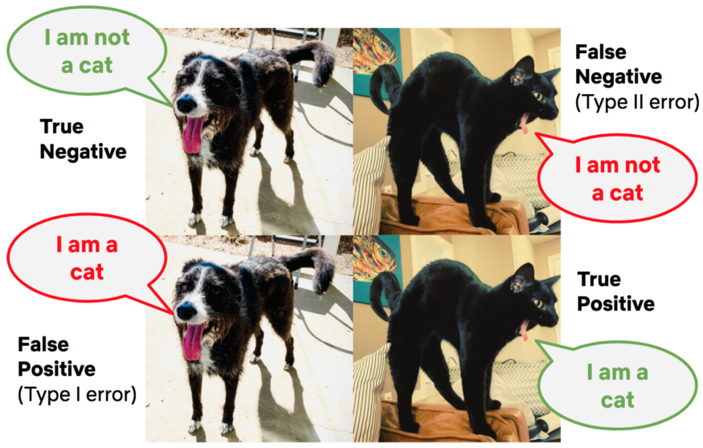
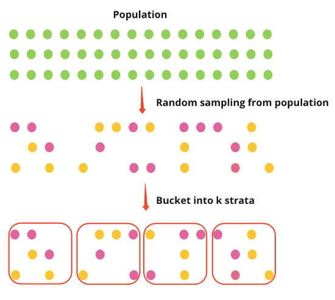
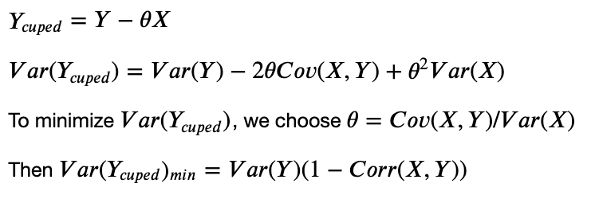
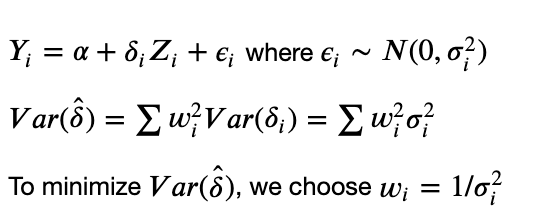
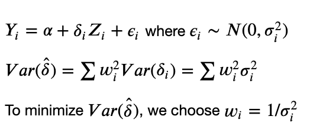

62 Experiments, General
TOC
- Misc
- Bias
- Planning
- Sample Size/Power/MDE
- Collection
- Post-Experiment Evaluation Checklist
- Treatment Effects
- LATE (Local Average Treatment Effect)
- Decreasing the sampling variance of the treatment effect
- Stratified Sampling
- Post-stratified Sampling
- CUPED
- Variance Weighted Estimators
- CUPAC
- MLRATE
Misc
- If youre going to analyzing the results of a test, ask to be involved in the planning stages. This well help insure that the test has usable results.
- Error
- The false positive rate is closely associated with the statistical significance of the observed difference in metric values between the treatment and control groups, which we measure using the p-value.
- FPR typically set to 5% (i.e. falsely conclude that there is a statistically significant difference 5% of the time)
- False negatives are closely related to the statistical concept of power, which gives the probability of a true positive given the experimental design and a true effect of a specific size
- Power = 1 - FNR
- The false positive rate is closely associated with the statistical significance of the observed difference in metric values between the treatment and control groups, which we measure using the p-value.
Bias
- sampling bias - the probability distribution in the collected dataset deviates from its true natural distribution one would actually observe in the wilderness.
- spectrum bias - whenever a distribution which a model has been trained with changes, e.g. due to spatial or temporal effects, the validity of this model expires. (model drift?)
Planning
- Metrics
- If using multiple metrics/KPIs, make sure that you and the product manager agree on which metric/KPI should be primary and which should be secondary.
- Where do users get randomized? Can depend on the KPI youre measuring.
- App or website login - appropriate for product purchasing
- A click on the first screen of the signup flow - appropriate for app subscriptions
- Will you only be testing a subset of your customers?
- Example: testing changes in one country or platform and apply the learnings from the test before releasing them to our remaining users
- May affect the baseline KPI used to calculate the sample size
- Example: if a new feature is only going to be tested for English users on iOS the conversion rate may be different than the rate for all users on iOS. This also affects the number of users expected to enter the test because more users logged into iOS versus just English users.
- Calculate sample size
- May take months to reach the sample size needed to determine statistical significance of a measured effect
- (approx) Sample Size
- See Sample Size/Power/MDE
- Issues
- getting more samples or running an experiment for a longer time to increase the sample size might not always be easy or feasible
- If your sample size is large and therefore test duration is too long, you may need to change the metric/KPI youre measuring
- Example
- KPI: test whether new feature increased the percentage of new users that returned to the app 30 days after signup.
- This meant the test needed to run an additional 30 days to ensure new users in the control didnt get exposed to the new feature within the 30-day engagement window we wanted to measure.
- Example
- Does the time of year matter?
- Is there a seasonality aspect to your KPI, customer engagement, etc.?
- If so, the treatment effect may differ depending on when the test is conducted
- Is there a seasonality aspect to your KPI, customer engagement, etc.?
- Monitoring
- Confirm group/cohort proportions
- Example: If you have 3 treatments (aka variants) and 1 control, make sure each group has 25% of the test participants
- Unbalanced groups can result in violations of assumptions for the statistical tests used on the results
- Track KPIs
- Very bad treatments could substantially affect KPIs negatively. So you need to pull the plug if your business starts to tank.
- Confirm group/cohort proportions
Sample Size/Power/MDE
- Approximate Sample Size
- 80% Power
- n = 8 / (effect size^2)
- You can substitute correlation (?) for effect size
- Difference between means of two groups
- n = 32 / (effect size^2)
- Using variance
- n = (16* 2) / 2
- is variance of the data (outcome?)
- is the effect size
- n = (16* 2) / 2
- n = 8 / (effect size^2)
- 90% Power
- n = 11 / (effect size^2)
- Bayesian
- From https://www.rdatagen.net/post/2021-06-01-bayesian-power-analysis/
- Bayesian inference is agnostic to any pre-specified sample size and is not really affected by how frequently you look at the data along the way
- A bayesian power analysis to calculate a desired sample size entails using the posterior distribution probability threshold (or another criteria such as the variance of the posterior distribution or the length of the 95% credible interval)
- Minimum Detectable Effect (MDE) is proportional to 1/sqrt(sample_size)
- Example: Gelman (Confirming sample size of 126 has 80% power)
- Assumption: drug (binary treatment) increased survival rate by 25 percentage points (i.e. treatment effect)
- Evidently for a survival model, but Gelman uses standard z-test gaussian power calculation. So, I guess the survival model part doesnt matter.
- With 126 people divided evenly in two groups, the standard error of the difference in proportions is bounded above by (0.5*0.5/63 + 0.5*0.5/63) = 0.089, so an effect of 0.25 is at least 2.8 standard errors from zero, which is the condition for 80% power for the z-test.
- SE for the difference in 2 proportions

- In the example, the experiment is balanced so both the treatment and control groups have an equal number of participants (i.e. 63 in each group which is a 0.5 proportion of the total sample size)
- 0.25 / 0.089 = 2.8 s.d. from 0
- SE for the difference in 2 proportions
- Gelmans Explanation: If you have 80% power, then the underlying effect size for the main effect is 2.8 standard errors from zero. That is, the z-score has a mean of 2.8 and standard deviation of 1, and theres an 80% chance that the z-score exceeds 1.96 (in R,
pnorm(2.8, 1.96, 1, lower.tail = F)= 0.8).- Explanation of the Explanation: A two-tail hypothesis with a significance level of 0.05 are assumed. The right-tail critical value is 1.96. The power is the mass of the sampling distribution under the alternative to the right of this decision boundary. Then we want to find a Gaussian with a standard deviation of 1 so that 80% of its mass is to the right of 1.96. Then a mean of 2.8 gives the desired outcome.
- Also see Notebook pg 95
- Assumption: drug (binary treatment) increased survival rate by 25 percentage points (i.e. treatment effect)
- 80% Power
- Increasing Power
- Increase the expected magnitude of the effect size by:
- Being bold vs incremental with the hypotheses you test.
- Testing in new areas of the product
- Likely more room for larger improvements in member satisfaction
- Increase sample size
- Allocate more members (or other units) to the test
- Reduce the number of test groups
- there is a tradeoff between the sample size in each test and the number of non-overlapping tests that can be run at the same time.
- Test in groups where the effect is homogenous
- increases power by effectively lowering the variability of the effect in the test population
- Netflix paper
- Example: Testing a feature that improves latency
- e.g. the delay between a member pressing play and video playback commencing
- Latency effects are likely to substantially differ across devices and types of internet connections
- Solution: run the test on a set of members that used similar devices with similar web connections
- Increase the expected magnitude of the effect size by:
- {PUMP} Frequentist Multilevel Model Power/Sample Size/MDE Calculation
- Misc
- Factors affecting power
- With at least 1 outcome:
- design of the study; assumed model (type of regression)
- nbar, J, K: number of levels (e.g. students, schools)
- Unless block size differences are extreme, these should not affect power that much
- T: proportion of units treated
- number of covariates
- and R2, the proportion of variance that they explain
- ICC: ratio of variance at a particular level (e.g. student, school) to overall variance
- Unique to multiple outcomes
- Definitions of power
- Choose depends on how we define success
- Types
- Individual: probability of rejecting a particular H0
- the one you learn in stats classes
- 1-Minimal: probability of rejecting at least 1 H0
- D-Minimal: probability of rejecting at least D H0s
- Complete (Strictest): probability of rejecting all H0s
- Individual: probability of rejecting a particular H0
- Note: in the video, the presenter wasnt aware of any guidelines (e.g. 80% for Individual) for the different types of power definitions
- M: number of outcomes, tests
- rho: correlation between test statistics
- proportion of outcomes for which there truly are effects
- Multiple Testing Procedure (MTP)
- Definitions of power
- With at least 1 outcome:
- Uses a simulation approach
- Calculate test statistics under alternative hypothesis
- Use these test stats to calculate p-values
- Calculate power using the distribution of p-values
PUMP::pump_power- options
- Experiment
- Levels: 1, 2, or 3
- Randomization level: 1st , 2nd, or 3rd
- Model
- Intercepts: fixed or random
- Treatment Effects: constant, fixed, or random
- MTP
- Bonferroni: simple, conservative
- Holm: less conservative for larger p-values than Bonferroni
- Benjamini-Hochberg: controls for the false discovery rate (less conservative)
- Westfall-Young
- permutation-based approach
- takes into account correlation structure of outcomes
- computationally intensive
- Not overly conservative
- Romano-Wolf
- See Statistical Concepts >> Null Hypothesis Significance Testing (NHST) >> Romano and Wolfs correction
- Similar to Westfall-Young but less restrictive
- Experiment
- Example
- Description
- Outcome: 3 level categorical
- 2-level Block Design
- 2-level: students within schools
- Block Design: treatment/control randomization of students occurs within each school
- Power calculation
.png)
- d_m is the code for the experimental design (assume these are listed in the documentation)
- MDES is a vector of the treatment effects for each of the 3 levels of the outcome
- See Factors affecting power (above) for descriptions of some of these args.
- Results
.png)
- See above for descriptions of the types of power (Factors affecting power >> Unique to multiple outcomes >> Definitions of Power)
- None: w/o multi-test correction: 81% power
- BF: w/ Bonferroni (multiply p-values by number of outcomes): 67%
- D 1,2,3 are individual power for each of the 3 levels of the outcome
- min 1, 2 = at least 1, 2 levels of the outcome
- complete is for all 3 levels of the outcome (will always be lowest)
- Description
pump_mdes()calculates minimal detectable effect size (MDES)pump_sample()calculates the sample size given target power (e.g. 0.80) and MDES- Sample Size Types
- K: number of level 3 units (e.g. school districts)
- J: number of level 2 units (e.g. schools)
- nbar: number of level 1 units (e.g. students)
- Example
.png)
- Results
.png)
- Results
- Sample Size Types
- Observe the sensitivity of power for different design parameter values
- Example
- options
pgrid <- update_grid(
pow,
# vary parameter values
rho = seq(0, 0.9, by = 0.1)
# compare multiple MTPs
MTP = c("BF", "HO", "WY-SS", "BH")
)
plot(pgrid, var.vary = "rho")- Outputs facetted multi-line plots with
- y = rho, y = power
- multiple lines by MTP
- facetted by power definition
Collection
- Record data; dont calculate or transform it
- If possible, store data as text or in text compatible format. (i.e. .csv, .tsv, or some other delimited file)
- Some other formats add trailing spaces, etc.
- If possible, store data as text or in text compatible format. (i.e. .csv, .tsv, or some other delimited file)
- Back up data
- Multiple places is recommended
- Curate Data Organization
- Clean data with simple organization fosters its use and a shared understanding of procedures and analysis.
- Observations, cases, or units, etc. appear in rows
- variables appear in columns
- values for observations on variables appear in the matrix of cells between them
- Nesting structure (i.e. grouping variables) should appear in columns, not rows.
- Beware complicated row, column, or value labels.
- Row, column, or value labels with case sensitive characters, special characters, or whitespace cause problems in analytical software beyond the spreadsheet (they can be a problem within the spreadsheet as well)
- Use lower cases that fully denote the observation, variable, or label, unless data is used as-is.
- Avoid spaces.
- Use underscores rather than periods to indicate white space.
- Avoid special characters percent or pct is better than %.
- All calculations should occur outside the data repository
- ** keep an original, un-adulterated copy of the data in a separate sheet or file **
- Carrying calculations, summaries, and analysis within the data structure gets in the way of efficient updating.
- Updating an analysis means merely updating the data set (again in the native form) called by the procedure if scripts and functions are well-documented.
- Automating reporting and analysis is a big deal in both the public and private sectors.
- Do not summarize data during collection (unless the need is pressing)
Post-Experiment Evaluation Checklist
- Did the test run long enough so that the sample size reached?
- Are treatment variants proportioned correctly?
- Did users get exposed to multiple treatment variants and how many?
Treatment Effects
- Misc
- Recommended metrics to be reported for medical studies (Harrell). Some of this is perhaps generalizable to any RCT with a binary outcome.
- The distribution of Risk Difference (RD)
- covariate-adjusted OR
- adjusted marginal RD (mean personalized predicted risk as if all patients were on treatment A minus mean predicted risk as if all patients were on treatment B) (emmeans?)
- median RD
- Recommended metrics to be reported for medical studies (Harrell). Some of this is perhaps generalizable to any RCT with a binary outcome.
- Notes from https://chris-said.io/2021/03/28/youre-measuring-wrong/

z is the treatment availability assignment
cp is shorthand for complier, referring to people who complied with the instructions.
Ycp,z = 1 therefore represents the average outcome of the group that actually received treatment, since they were compliers (cp) who were randomly assigned to treatment availability (z=1).
Yz = 0 represents the average outcome of the control group (z=0).
Local Average Treatment Effect (LATE)
- The LATE tells you how much the treatment affects the people who actually got treated
- cp = Ycp,z = 1 - Y0cp,z=1
- cp is the Local Average Treatment Effect (LATE), since it reflects the impact of the treatment on a particular subpopulation (subpopulation being the compliers who were treated)
- Ycp,z = 1 is the average outcome for compliers who were treated
- Y0cp,z=1 is the average outcome for compliers if they hypothetically werent treated (counterfactual)
- Using substitution and some algebra (see article above for details), the counterfactual part can be avoided and this equation becomes

- cp is the fraction of compliers
- Bias within complier group
- groups counterfactual outcomes might be different from other groups.
- LATE accounts for that by correctly reporting the impact of the treatment relative to the counterfactual.
- The treatment might be more effective in the complier group than in the never-taker group.
- That bias is unescapable and is known as a heterogenous treatment effect. The way to deal with this bias is to acknowledge it transparently.
- groups counterfactual outcomes might be different from other groups.
- If treatment involves more than a single dose, and people can withdraw midway through the program.
- Report the Intention To Treat (ITT) metric, which is the impact of being assigned to treatment (Yz=1 Yz=0) rather than the impact of being treated.
Decreasing the sampling variance of the treatment effect
Misc
- Notes from Online Experiments Tricks Variance Reduction
- Alternative to increasing power
- Winsorize ({DescTools::Winsorize}), binarize, or other more complicated metrics transformations will help decrease the variance significantly. However, metrics transformation introduces bias
- CUPED is widely used and productionalized in tech companies and ML-based methods are often used to incorporate multiple covariates. (see below)
Stratified Sampling

- Stratified sampling buckets the population into k strata (e.g., countries), and then the experiment random samples individuals from each stratum independently.
- Overall Mean and Standard Error
.png)
- Overall Treatment Effect and Variance

- Ystrat is the treatment effect
- pk is the sample size proportion of strata k
- Pro - provides an unbiased estimate of the treatment effect and effectively removes the between-strata variance
- Con - very hard to implement stratified sampling before experiments
Post-stratification
- Post-stratification randomly samples the population first and then places individuals into strata.
- The Effect is measured as a difference in means between treated and untreated
- Steps
- Randomly sample population then place individuals in strata
- Randomly assign treatment to all individuals all together
- She didnt do the assignment per strata which Im not sure I agree with. You could get a long run of 1s for one strata and a long run of zeros for another strata.
- Run experiment
- For each strata
- Calculate mean outcome for treated and mean outcome for untreated
- Calculate the difference in mean outcomes
- Take the mean of the differences for the average treatment effect (ATE)
- denominator is the number of strata
- In the example, the procedure was simulated multiple times to get an ATE distribution
- I guess you could bootstrap or use {emmeans} to CIs, pvals, etc.
CUPED (Controlled-experiment using pre-experiment data)
Y is the outcome variable
X is pre-experiment values of the outcome variable
- So, youd need as many pre-experiment values as observed values during the experiment.
- and potentially the same individuals? Probably not necessary but desirable.
- When no pre-experiment values of the outcome variable exist, a variable highly correlated to the outcome variable thats NOT RELATED TO THE EXPERIMENT can be used.
- Like an instrument from an IV model.
- Can use ML to construct the control variate. (see CUPAC below)
- This blog post goes through the algebra extending CUPED from one covariate, X, to multiple covariates.
- So, youd need as many pre-experiment values as observed values during the experiment.
Also see Understanding CUPED
Steps
- Randomly assign treatment to individuals
- Perform experiment
- Calculate (eq.3)
- Calculate Ycuped (eq.1)
- Calculate the effect size by taking the difference between the treated Ycuped mean and the untreated Ycuped mean
Variance-Weighted Estimators
- Variance is reduced by calculating a weighted variance based on the variance of an individuals pre-experiment data
- Y is the outcome variable
- Z is the treatment indicator
- is the treatment effect
- i2 is the pre-experiment variance of individual is data
- alternative ways of estimating the variance include ML models and using Empirical Bayes estimators (Paper)
- Steps
- Calculate individual variances, i2
- Bucket individuals into k strata based on their variances
- Calculate the mean of each stratas variance, stratak_mean_variance
- Randomly assign treatment to individuals
- Perform experiment
- For each strata
- Calculate the effect for each strata by taking the difference between the treated mean Y and untreated mean Y
- Calculate strata weight, wk = 1 / stratak_mean_variance
- Calculate weighted effect for strata k, w,k = k x wk
- Calculate variance weighted treatment effect by adding all the weighted effects and dividing it by the sum of the weights
- w = sum(w,k) / sum(wk)
- Pros and Cons
- The variance-weighted estimator models individual pre-experiment variance as weight and it can be used as a nice extension to other methods such as CUPED.
- I guess you just calculate k Ycuped and then do the weighting procedure. and X shouldnt be affected just some grouped calculations.
- It works well when there is a highly skewed variance between users and when the pre-treatment variance is a good indicator of the post-treatment variance.
- Not sure what exactly is meant by highly skewed variance between users. Most users have high or most users have low variance for the pre-experiment data?
- When the variance of the pre-treatment variance is low or when the pre- and post-experiment variances are not consistent, the variance-weighted estimator might not work.
- The variance-weighted estimator is not unbiased. Managing bias is important for this method.
- The variance-weighted estimator models individual pre-experiment variance as weight and it can be used as a nice extension to other methods such as CUPED.
- Variance is reduced by calculating a weighted variance based on the variance of an individuals pre-experiment data
CUPAC (Control Using Predictions As Covariates)
- ML extension of CUPED (Paper)
- Assuming we have pre-experiment metrics, X1, X2, X3, and X4. Essentially, what this method does is to use some machine learning model to predict Y using X1, X2, X3, and X4. And then, we can use the predicted value as the control covariate in CUPED.
MLRATE (machine learning regression-adjusted treatment effect estimator)
- Also see
- Does the same thing as CUPAC to get the control covariate, but instead using the CUPED equation with to get Ycuped, it estimates Ycuped using OLS regression.

- See Introducing MLRATE article for more details